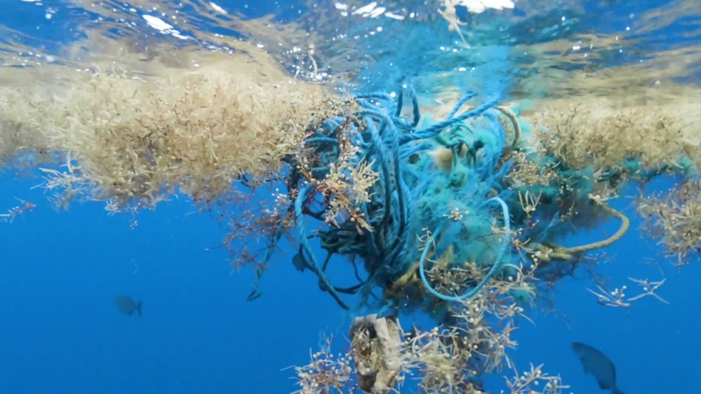

|
||||
| Welcome | Images | Why Seltzer | Links | Multimedia |
Multimedia
Part of drinking seltzer water involves disposing of the cans or
bottles properly. Here is an example how to line a trash can and put a
knot in it so that it doesn't sink into the waste basket. This is a
skill many of us forget or are a little lazy to do.
HISTORY OF TRASH
I think I might drink up to 10 fizzy waters a day if I can, but on
average it's about 5. It produces waste, I recycle where available. The
history of how the trash bag developed is important to understand why
and how we got here. Visit the link below to view the history of how the
trash bag liner came to be:
https://www.plasticplace.com/blog/the-trash-bag-in-history-part-i
NOT ALL GREAT, IT PRODUCES WASTE!
Though trash bags have helped us in our daily lives, we cannot ignore the effects that the various forms of plastics has on the world.
To read more about the matter, visit the article below:
https://www.wptv.com/news/protecting-paradise/microplastics-discovered-in-extreme-concentrations-in-the-north-atlantic